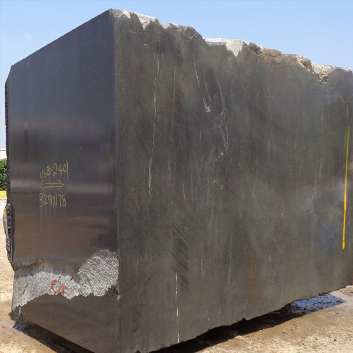
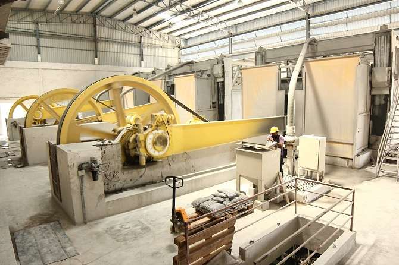
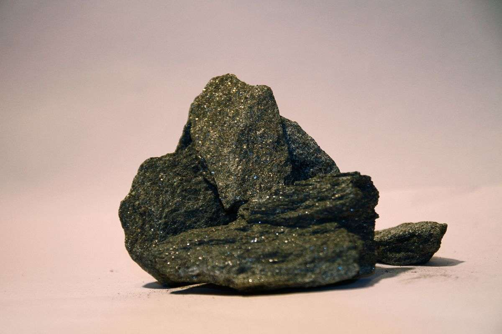
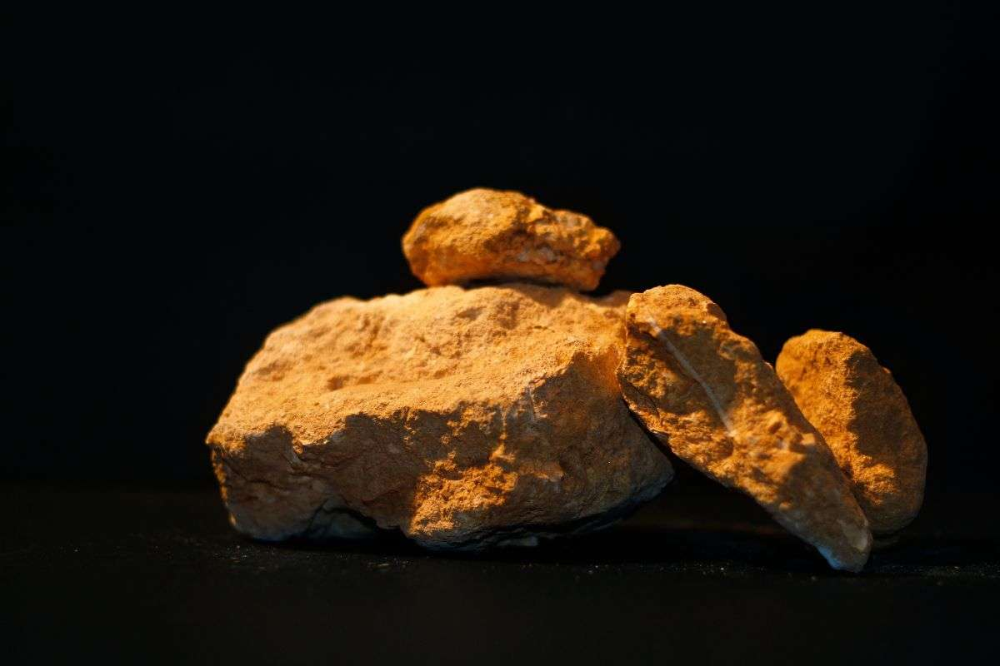
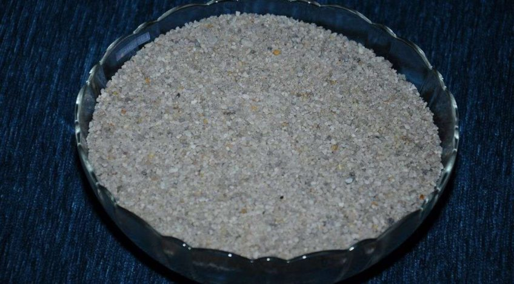
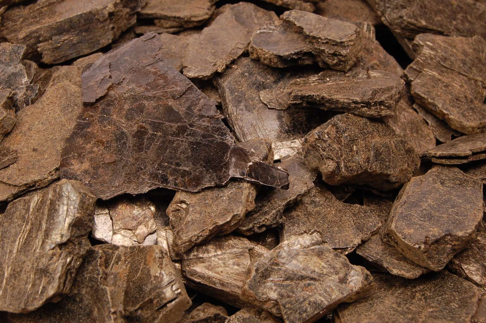
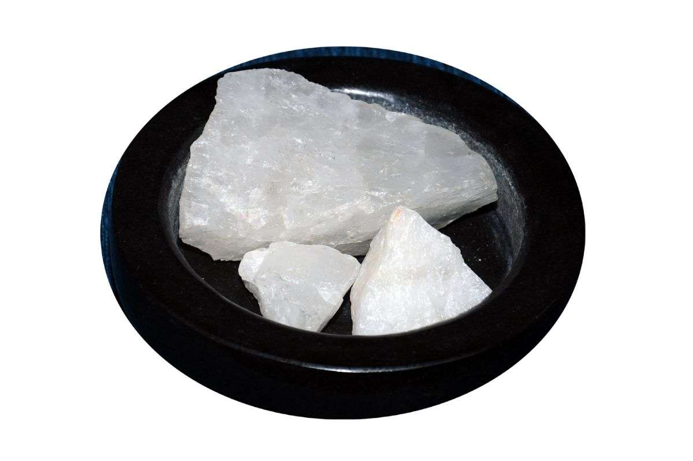
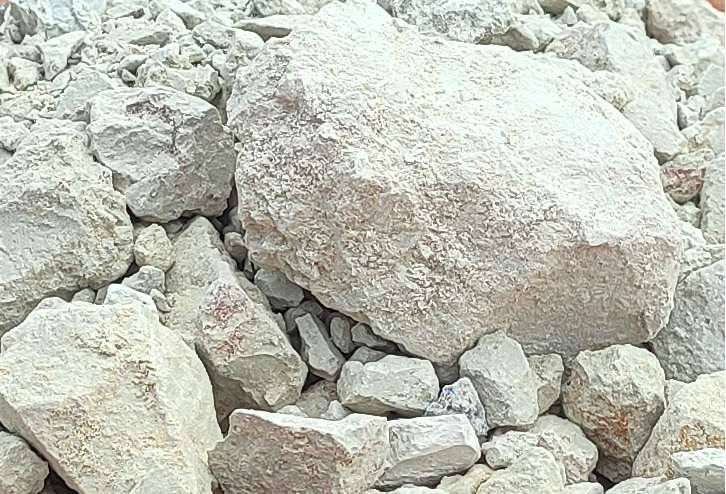
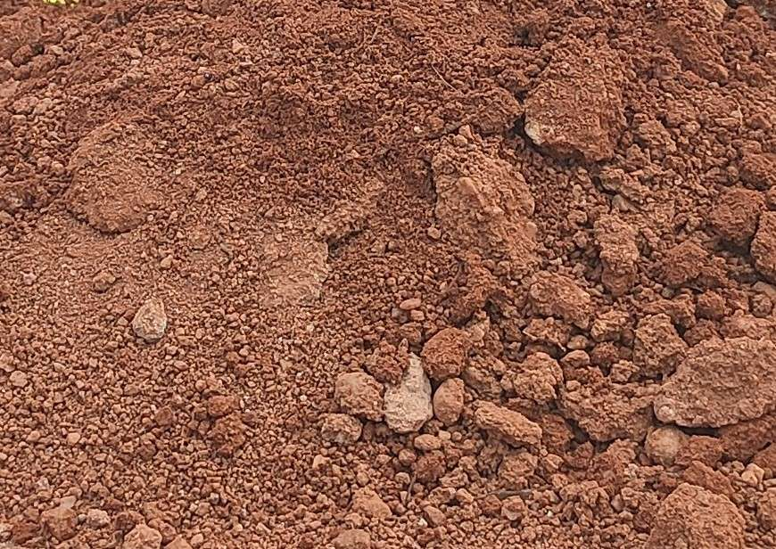

Tamil Nadu Minerals Ltd
Tamil Nadu Minerals Ltd (TAMIN), a Government of Tamil Nadu undertaking, was started in 1978, engaged in exploration mining, exploitation, processing and marketing of Granite and other minerals like Graphite, Limestone, Indian Standard Sand and vermiculite.

Abouts us
TAMIN – a Government of Tamil Nadu Undertaking was started in 1978 to manage the exploration, mining, processing and marketing of the minerals base in the State. With a clear mandate to extract high-quality stones with a special focus on granite blocks, TAMIN quarries have been in operation for 45 years now, thus making a significant contribution towards granite production and export. With 62 own granite quarries spread across the southern State of Tamil Nadu in India, TAMIN also owns a state of the art granite processing unit. Other than granite TAMIN also owns and operates:
Graphite Mine and a Graphite Flakes Processing & Beneficiation Unit at Sivagangai which produces 30% of India’s Graphite production.

Silica Sand processing Unit at Ennore, Chennai which is the only authorised unit by BIS to produce Standard Sand for quality testing by all cement factories across India.

Exfoliation of Vermiculite at Sevathur, Thirupathur District

product range includes – Granite Raw Blocks, Slabs, Tiles, Monuments, Graphite, Limestone, Indian Standard Sand, Vermiculite, Quartz, Fireclay and Laterite. A State known for its legacy in granite, TAMIN entered the export market in 1979 with dimensional blocks, slabs, and other coloured granite forms. The Dimensional Granite Blocks from TAMIN has an impressive customer base in Europe, Middle East, Japan, and China. Parallelly, a sizeable market exists for various finished and semi-finished granite products like Dimensional, calibrated Tiles, Random Building slabs, wall panels, and monuments in Australia, the United Kingdom, Switzerland, Holland, the USA, and Germany. TAMIN believes in sustainable mining, is known for ethical practices and adheres to global industry standards in quarrying techniques with blasting kept to an absolute minimum. Owning responsibility for sustained economic performance, environmental and social stewardship, the CST interventions at TAMIN focus on enhancing the quality of life of the communities and generating sustainable livelihoods.
Why TAMIN
• TAMIN believes in sustainable mining, is known for ethical practices and adheres to global industry standards in quarrying techniques with blasting kept to an absolute minimum.
• Owning responsibility for sustained economic performance and social stewardship, the CSR interventions at TAMIN focus on enhancing the quality of life of the communities and generating sustainable livelihoods.
• Keeping go-green approach in mind, TAMIN is rapidly moving towards renewable energy sources such as Solar Energy for Power generation in Factories instead of relying on conventional diesel powered machines.
• TAMIN’s pride Black, Colombo Jubrana, Paradiso, Redwave and Fox Brown dimensional blocks with unique color and pattern are highly demanded in Italian and German Markets and Local Buyers.
• The Dimensional Granite Blocks from TAMIN has an impressive customer base in Europe, Middle East, Japan, and China. Parallelly, a sizeable market exists for various finished and semi-finished granite products like Dimensional, Calibrated Tiles, Random Building Slabs, Wall Panels, and Monuments in Australia, the United Kingdom, Switzerland, Holland, the USA, and Germany and some prominent 100% E.O.U granite processors in India.
• TAMIN’s plants are set with latest state of the art machineries to allow lower cost of production, Quality product and wider product mix with different finishes.
• TAMIN has own quarries of all the colours which enable to supply the finished products consistently over the years.
• TAMIN is the only company authorized by BIS supplying Indian standard sand.
Products:
1.Granite Raw Blocks – Black & Colour:
TAMIN has got substantial quarrying rights of granite in Tamil Nadu. The granite deposits are rich in black and colour varieties and are among the best in the World. TAMIN’s pride and buyers’ choices are Black, Colombo Jubrana, Paradiso and Redwave dimensional blocks. Paradiso material (introduced by TAMIN), is unique in colour and pattern and is exported in large quantity to Italian and German markets. Apart from this, TAMIN has other colour material like Hawks Eye, Dekotta, Black Wonder, Fox Brown, Black Forest, which are widely welcomed by International and Local Buyers.
2.Granite Finished Products:
TAMIN has set up a new 100% export oriented granite slab processing unit at Melur, Madurai District. The installed capacity of the plant is 1,80,000 square meters / annum in terms of 2 cm / 3 cm thick granite slabs. This plant has been set up with a latest state- of –the- art machineries to allow lower cost of production, wider product mix with different finishes like sawn, polished slabs, leather finished slabs and also production of cut to size materials for project orders. This plant is equipped with 3 Jumbo gang saws, 2 wire saws, 1 line polishing machine, resin plant and edge cutting machines which all are imported. This slab unit involves creation of modern processing facility designed with a rational process flow from the receipt of raw block and consumable to the despatch of finished goods. At present TAMIN is processing 2 & 3cm building slabs of various black and coloured materials such as Colombo Jubrana, Red wave, Paradiso and also processing new colour varieties such as Fox brown, Hawks eye etc. Major production is 70% of coloured granite material and 30% of black granite materials.
3.Graphite:
The Sivaganga graphite is of flaky nature with 14% average fixed carbon content. TAMIN has over 600 acres (243 Hects) of graphite bearing land in Pudupatti, Kumaripatti and Senthiudayanathapuram villages of Sivaganga taluk, Sivagangai District, Tamil Nadu. The estimated reserve of graphite ore in leasehold area is three million tonnes. The Sivaganga graphite plant was established during December 1994 near the mine at Senthi Udayanathapuram Village, Sivaganga District, Tamil Nadu at the project cost of Rs.28 crores. Plant process capacity is 200 tonnes ore per day and production capacity is 20 tonnes on average of beneficiated graphite up to 96% FC per day. Applications: Graphite finds application in the manufacture of Magnesia - carbon refractory bricks for lining furnaces. Graphite crucibles for melting non-ferrous metals. Carbon brushes, Paints, Lubricants, Graphite brake lining and clutches for automobiles, Pencils etc. are produced from TAMIN Flaky graphite. Technical Details of Flaky graphite:Moisture Content - 0.5% (Max)
| SPECIFICATION | GRAPHITE FLAKES FIXED CARBON GRADE | |||||||||
|---|---|---|---|---|---|---|---|---|---|---|
| Upto 84% | 85–87% | 88 - 89% | 90% | 91% | 92% | 93% | 94% | 95% | 96% | |
| Volatile Matter (V.M) (Max.) | 4.5 | 4.0 | 3.5 | 3.0 | 3.0 | 2.5 | 2.5 | 2.0 | 2.0 | 2.0 |
| Ash Content (ASH) (Max.) | 12.0 | 10.5 | 8.5 | 7.5 | 6.5 | 6.5 | 5.5 | 4.5 | 3.5 | 3.0 |
| V.M. + ASH (Max.) | 15.5 | 14.5 | 11.5 | 9.5 | 8.5 | 7.5 | 6.5 | 5.5 | 4.5 | 3.5 |
TYPICAL SIZE ANALYSIS OF ASSORTED FLAKY GRAPHITE (APPROX).
| MESH (BSS) | WEIGHT PERCENT FLAKES |
|---|---|
| +72 | 20 - 45 |
| -72 + 150 | 35 - 45 |
| -150 + 200 | 5 - 15 |
| -200 | 15 - 30 |
Higher the F.C. content, the Flake size distribution would be on the finer side.
TYPICAL SIZE ANALYSIS OF DUST EXTRACT (D.E) FINES GRAPHITE (APPROX.)
| MESH (BSS) | WEIGHT PERCENT D.E.FINES |
|---|---|
| -52 + 200 | 30 - 40 |
| -200 | 60-70 |
4.Lime Stone
Limestone is a sedimentary rock composed largely of the minerals calcite and aragonite, which are different crystal forms of calcium carbonate. Most limestone is composed of skeletal fragments of marine organisms such as coral or foraminifera. Limestone is a raw material for cement. TAMIN’s Periyanagalur mine is located in Ariyalur District and its total extent is 12.74.5 Hectares. The mine can produce 1500 tonnes ore per day.
5.Indian Standard Sand
TAMIN is the only company supplying Indian Standard Sand IS650:1991 as per B.I.S. approval to various cement factories, research laboratories etc. for testing the quality of cement. The factory is situated at Ennore 15, km. North of Chennai. The processed sand is marketed in three grades (Grade I, Grade II & Grade III)
6.Vermiculite
Vermiculite is a hydrated lamellar mica group of minerals, when heated to a high degree of temperature exfoliates and expands 8 to 14 times in volume and yields Exfoliated Vermiculite by loss of water molecules.
Chemical Composition:
| Average Moisture | 7.86% |
| Loss on Ignition | 11.5% |
| SiO2 | 30.52% |
| Fe2O3 | 16.32% |
| TiO2 | 2.63% |
| Al2O3 | 14.74% |
| CaO | 9.47% |
| MgO | 3.68% |
| Alkalies | 3.68% |
Physical Characteristics:
The bulk density of Exfoliated Vermiculite is 172 Kg/M3 for size from 6mm to 12mm and 225 Kg/M3 for size below 1mm. The colour of Raw Vermiculite is light to dark brownish yellow, greenish or almost black. When heated, the colour changes to lustrous gold/golden brown with a silver (or) bronze tint.
Unique features of Exfoliated Vermiculite
- Feather Light
- Low Thermal conductivity
- Non-conductivity of electricity
- Fire resistant
- Echo Proof (Acoustical insulation)
- Termite resistant
- Optimum compatibility with cement
Uses of Exfoliated Vermiculite
In Building Activities (Grade I, II & III)
- Recommended as best thermal insulator and an ideal substitute than any other weathering course material
- Cold face insulator as insulation bricks in furnaces
- Plaster aggregates as fire proof material in structures
- Water leakage arrestor
- Insulation fill for homes
- Advantages:
- Low electricity cost
- Less load on structures
- Cost effective
- Fuel conservation
- Advantages:
In Horticultural / Agricultural Activities (Grade IV)
- Booster to soil health
- Light weight compound for terrace gardens
Advantages:
- Requires less watering
- Retains moisture and nutrients
- Improves soil aeration
- Needs no additional feeding
- Eliminates damping off
- Improves drought tolerance
- Helps in faster seed germinations
- Facilitates soil conditioning
In Bio-Technological Activities (Grade V)
- Carrier material of microbial inoculation for seed treatment
- Medium for tissue culture
Advantages:
- Reduces usage of chemical fertilizers
- Reduces bulk density in soil
- Increases hydraulic conductivity in soil
- Increases porosity in soil
- Maximum yield
- Healthier crops
- More revenue
NEW APPLICATIONS
- Compressed false ceiling sheets for roof insulation
- Clay mineral barrier in canal lining to eliminate seepage loss
- Polluted waste water remediation (Dye effluent / tannery effluent treatments)
- Waste land developments enriching with nutrient
TAMIN does mining and processing Vermiculite, a non-metalic versatile mineral at Sevathur Village, Thirupathur Taluk, Vellore District to suit various needs in building, Horti-Agricultural and Bio-technological activities.
7.Quartz
Quartz is a mineral, which is a member of silica groups. It is present in silica rich-igneous rocks and it is the basic materials of sandstone and is found in metamorphic rock lime gneisses, schists, charnockites and khondalites. TAMIN exploits good quality quartz. It is used in refractive Industries, Ceramic Industries, Glass Industry, Electronic Industry, Ferro Silican Materials, Non-Electric Conductivity, Insulators. Boiler Inner Coating, Grinding Stone, Emery Sheet and as Decorative Stone.
Technical specification
TAMIN’s quartz mine is located at Punganthurai village, Tirupur District
8.Fireclay & Laterite
Fireclay:
Fireclay is a refractory material made from natural argillaceous materials, primarily kaolinite group clays. It also contains fine-grained micas and quartz, and may also contain organic matter and sulfur compounds. It is used in the manufacture of ceramics, especially fire brick.
Laterite:
Laterite is a red, porous, concretionary clay which is found as mantle over bed rocks. Laterite is mainly composed of alumina and iron-oxide. It is a residual product of weathering in the hot humid climate.
TAMIN’s fireclay & laterite mine is located at Thalampattu village, Cuddalore District